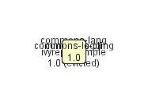
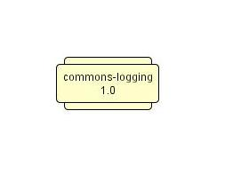
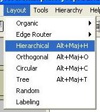
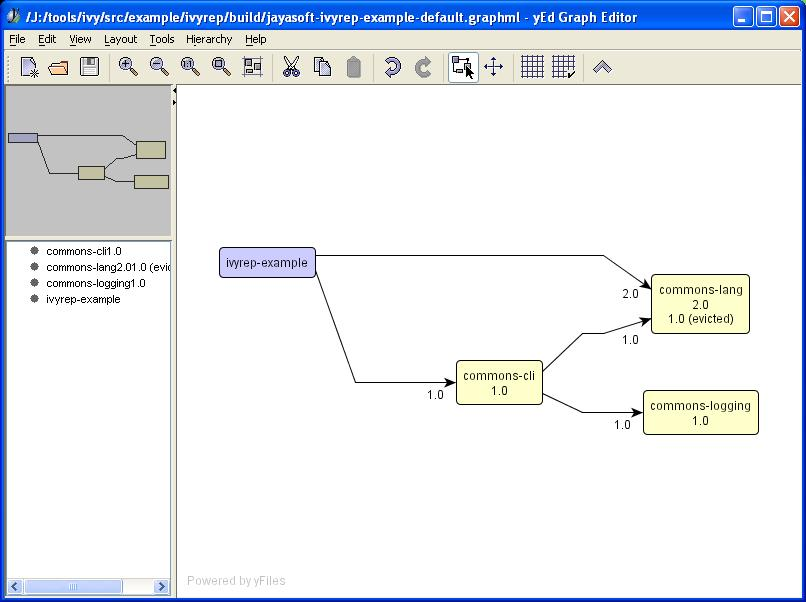

<a href="http://www.yworks.com/en/products_yed_about.htm">yEd</a> is a free graph editor, benefiting from all the automatic layouts of yFiles. Ivy is able to generate graphs which are readable by yEd. The graphs generated by ivy are not layed out (in fact it's why we use yEd), so you have to follow a simple sequence of steps to layout the generated graphs. <h2>Preparation</h2> First you have to generate a graphml file. Simply call the report task (see [[use ivy use documentation]]) for that. <h2>Step 1: open the graphml file</h2> Launch yEd editor, and open the graphml file generated by the report task. You should obtain something like this: <center> <br/> </center> <h2>Step 2: ask yEd to adjust nodes size</h2> <center> <img src="images/yed-step2.jpg"/><br/> <img src="images/yed-step3.jpg"/><br/> <br/> </center> <h2>Step 3: ask yEd to layout nodes</h2> <center> <br/> <img src="images/yed-step5.jpg"/><br/> <img src="images/yed-step6.jpg"/><br/> That's all, you should have obtained something like this: <br/> Note that this is only one possibility, test the available layouts yourself, you could find one better in your case. Once you have layed out the graph, you can either save it with in the same file (but be warned that it will be overwritten at next ivy report call), or another file, export it to jpg, gif, svg, etc. (see <a href="http://www.yworks.com/en/products_yed_about.htm">yEd</a> site for details). </center>